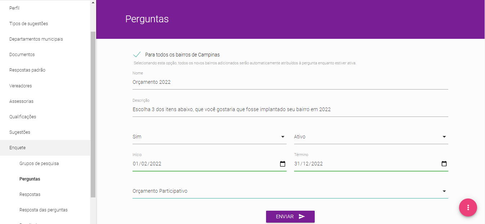
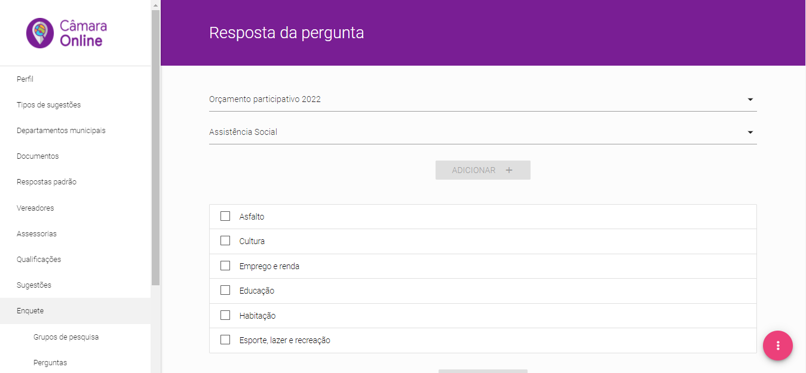

A funcionalidade “Enquete” permite ao grupo gestor da Câmara Municipal fazer pesquisas de opinião a qualquer tempo, utilizando o aplicativo para os cidadãos responderem.
Quando do cadastramento dos parlamentares, é permitido ao Grupo Gestor autorizar ou não cada um deles a fazer pesquisas de forma autônoma. Entretanto, a alternativa mais comum é organizar as necessidades de consultas de tal forma que o Grupo Gestor faça as pesquisas de forma coordenada com cada parlamentar, evitando assim que o cidadão receba perguntas em excesso, ou mesmo com conteúdo redundante.
Grupos de Pesquisa
Para fins de organização, as pesquisas serão separadas por grupos de pesquisas, que foram criados para agrupar pesquisas com características semelhantes, seja pelo conteúdo da enquete, seja pela unidade gestora pesquisada, etc.
>Desta forma, a primeira coisa a ser criada, antes mesmo de se pensar em uma pergunta, é um ou mais grupos de pesquisa.
Perguntas
O item de menu “Perguntas” foi feito para dar total flexibilidade e riqueza de opções para as consultas feitas à população pela Câmara Municipal.

Formulário para criação de pergunta
O primeiro passo para se criar uma pergunta é escolher a abrangência geográfica da mesma e aí a ferramenta “Câmara Online” permite que sejam escolhidos todos os bairros da cidade – ao clicar na caixa de seleção [check box] ao lado da expressão “Para tosos os bairros do município”, ou bairro a bairro – clicando-se na caixa de seleção ao lado da expressão “Bairro”, através de uma lista de todos os bairros que abrigam cidadãos que já baixaram o aplicativo para dispositivos móveis
Depois disso é solicitado no item “Nome” um título para a pesquisa, que servirá para a mesma ser localizada na lista de enquetes criadas pela Câmara Municipal.
Logo abaixo no item “Descrição” se insere a pergunta propriamente dita, isto é, a consulta que vai aparecer no celular para o cidadão responder.
Duas caixas de seleção você deverá marcar logo abaixo:
A primeira, cujo campo se chama “Múltipla Escolha”, serve para informar que aquela enquete tem somente uma resposta ou se o cidadão pode escolher mais que uma opção.
A segunda, ativa ou inativa a enquete a qualquer tempo, no caso de ser necessário tirar aquela consulta do ar antes do prazo determinado para o término.
Logo abaixo, são cadastradas as datas de início e término da consulta à população e, finalmente, escolhe-se na caixa de seleção o Grupo de pesquisa ao qual fará parte aquela enquete particularmente.
Ao clicar o botão “ENVIAR”, a questão é salva na Plataforma e aguarda a inserção das diversas opções de respostas para que essa consulta seja publicada.
Respostas
No item de menu “Respostas” são inseridas cada opção de resposta de todas as enquetes criadas na Plataforma de Colaboração Cidadã “Câmara Online”.
A ideia é agrupar todas as respostas nesse menu para que elas possam ser reutilizadas, quando necessário.
Para cadastrar uma resposta nova segue-se o mesmo procedimento padrão de inserção de todo novo item na ferramenta, clica-se no botão magenta, no canto interior direito, escolhe-se o botão verde, com um sinal de “+” e abre-se o formulário de inserção de nova resposta.
Resposta da Pergunta
Esse item de menu tem a função de vincular todas as respostas, gravadas no item de menu “Respostas", que o cidadão terá no rol de escolha dele para uma determinada pergunta.

Vinculação de respostas à pergunta
Para concluir esse procedimento, basta escolher a pergunta pelo nome dado a mesma, abrir a caixa de seleção que listará todos os itens de respostas cadastrados, escolher o primeiro dos itens que deverá figurar para o cidadão como opção de resposta e clicar no botão adicionar para inserir o item. Repita a operação para completar a adição de todas as opções de respostas desejadas.
Resultado
O Grupo Gestor, bem como todos os parlamentares enxergam os resultados no item de menu “Resultados”.
Para consultar o resultado de uma determinada enquete, escolhe-se a pergunta que se deseja obter o resultado.
Os resultados são apresentados em gráficos de pizza e originalmente são mostrados os dados de toda a área de abrangência escolhida.
Clicando-se na caixa de seleção “Todos os bairros”, abre-se uma lista dos bairros consultados e o parlamentar pode visualizar o resultado da pesquisa bairro a bairro.